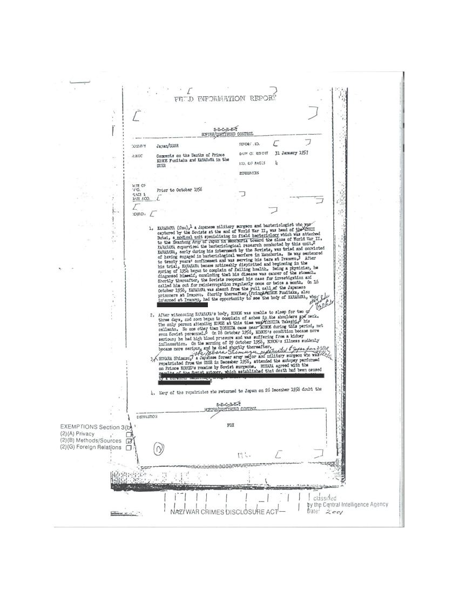

In accordance to the Japanese Imperial Government Disclosure Act (P.L.106-657) and the Executive Order 13110 (Jan. 11, 1999), the following documents have been collected by the U.S. government and put under jurisdiction of the Central Intelligence Agency (CIA) and the Interagency Working Group (IWG), in order to turn records related to Japanese war crimes and war criminals in World War II more accessible
The documents collected can be viewed as PDF files or on the page below

Report on the death of a notorious japanese convicted war criminal.